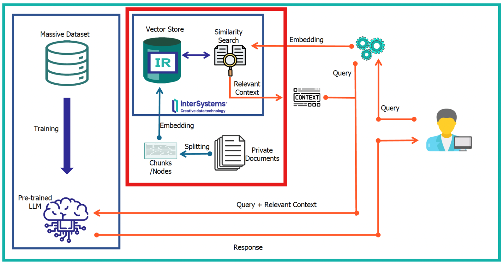

Desarrollo de sistemas Retrieval-Augmented Generation (RAG) capaces de responder preguntas sobre documentos parlamentarios mediante recuperación léxica, semántica e híbrida y modelos de lenguaje de gran tamaño.
Los Large Language Models pueden generar respuestas incorrectas cuando no disponen del contexto adecuado. Para evitar este problema, el sistema recupera primero los fragmentos más relevantes del corpus documental para añadirlo como contexto antes de generar la respuesta.
Arquitectura general del sistema RAG, desde la recuperación de información hasta la generación de la respuesta mediante el modelo de lenguaje.

El sistema sigue un pipeline RAG en el que la recuperación de información se realiza antes de la generación de la respuesta. De esta forma, el modelo de lenguaje dispone de contexto procedente de los documentos parlamentarios antes de responder a la consulta del usuario.
Los documentos parlamentarios se procesan y se dividen en fragmentos de un máximo de 300 tokens. Cada fragmento conserva información textual y metadatos relevantes para facilitar su recuperación posterior.
Ante una pregunta, el sistema recupera los fragmentos más relevantes utilizando diferentes estrategias: BM25, recuperación mediante embeddings, búsqueda híbrida de OpenSearch y la combinación mediante Reciprocal Rank Fusion (RRF).
Los fragmentos recuperados y sus metadatos se concatenan para construir el contexto que se proporciona al modelo de lenguaje junto con la pregunta original.
El contexto recuperado se introduce en un prompt junto con la consulta del usuario. Mistral-7B-Instruct utiliza esta información para generar una respuesta basada en el contenido recuperado.
El sistema se evalúa tanto desde el punto de vista de la recuperación como de la generación. Para el retrieval se utilizan HitRate@K, Precision@K y Recall@K, mientras que la calidad de las respuestas se analiza mediante Context Relevance, Faithfulness y Answer Relevance.
El sistema fue evaluado sobre un conjunto de 40 preguntas, analizando tanto la calidad de la recuperación de información como la calidad de las respuestas generadas.
Se compararon cuatro estrategias de recuperación: BM25, embeddings, búsqueda híbrida de OpenSearch y Reciprocal Rank Fusion (RRF).
| Sistema | HitRate@3 | Precision@3 | Recall@3 |
|---|---|---|---|
| BM25 | 0.700 | 0.267 | 0.388 |
| Embeddings | 0.625 | 0.250 | 0.333 |
| Híbrido OpenSearch | 0.575 | 0.192 | 0.283 |
| Híbrido RRF | 0.725 | 0.292 | 0.396 |
| Sistema | HitRate@5 | Precision@5 | Recall@5 |
|---|---|---|---|
| BM25 | 0.775 | 0.190 | 0.446 |
| Embeddings | 0.725 | 0.175 | 0.412 |
| Híbrido OpenSearch | 0.700 | 0.267 | 0.387 |
| Híbrido RRF | 0.775 | 0.200 | 0.458 |
La calidad de las respuestas generadas se evaluó mediante un modelo de lenguaje utilizado como juez, empleando tres métricas con una escala de 1 a 5: Context Relevance, Faithfulness y Answer Relevance.
| Sistema | Context Relevance | Faithfulness | Answer Relevance |
|---|---|---|---|
| BM25 | 3.55 | 3.58 | 3.55 |
| Embeddings | 4.90 | 4.90 | 4.90 |
| Híbrido OpenSearch | 4.90 | 4.90 | 4.90 |
| Híbrido RRF | 4.65 | 4.62 | 4.67 |
Como evaluación adicional, se realizó una valoración externa del sistema híbrido RRF para analizar la calidad del contexto recuperado y de las respuestas generadas.
| Sistema | Context Relevance | Faithfulness | Answer Relevance |
|---|---|---|---|
| Híbrido RRF | 3.35 | 2.75 | 3.05 |